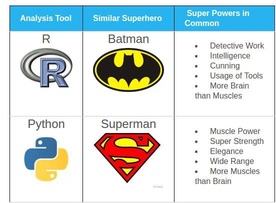

Chapter 3 Introduction to R
R is one of the most popular data science language along with Python and Julia
3.1 What is R
3.1.1 Description
R is an open source programming language initially dedicated to statistics and data analysis. It is the open-source version of the original S/S-plus language, developed by Bell labs a looong time ago. It was developed in the late 90’s. Being open-source, the number of packages available is considerable, generating both completeness and confusion.
R is a functional programming language, meaning that functions are at the very core of its usage. It is not a object-oriented language although there are classes, but which are mainly hidden from the end-user.
THe basic R is a command line interface, pretty similar to the bash
 It is an interactive language, meaning you can execute commands one after the other, no compilation is needed to execute a sequence of commands and you can try / adjust yourt code on the fly \(\rightarrow\) very flexible (like IPython)
Another very interesting characteristic of the language is that it is by design vectorized, meaning operations are executed at once on vectors, without explicit loops, which makes it very effective (as long as you don’t loop…)
It is an interactive language, meaning you can execute commands one after the other, no compilation is needed to execute a sequence of commands and you can try / adjust yourt code on the fly \(\rightarrow\) very flexible (like IPython)
Another very interesting characteristic of the language is that it is by design vectorized, meaning operations are executed at once on vectors, without explicit loops, which makes it very effective (as long as you don’t loop…)
3.1.2 (Objective) comparison with Pyhton
What they have in common :
- Both language are open source and come with a wide set of capabilities and a community
- Interactivity
- Data science development environment (Jupyter)
- Several ways to achieve the same task
What differs :
- R is dedicated to data / python is a generic programming language
- Functional vs object oriented
- Analysis (R) vs final product (Py) orientation

3.1.3 What can I do with R
R’s core relies in data manipulation and statistical analysis. But the community made it grow in many directions
- Read data from multiple sources (excel, text files, databases, big data infrastructures…)
- Machine learning and deep learning
- Data visualization
- Communication
- Publications
- … Usages I probably have no idea about !!
3.1.4 Quick presentation of the ecosystem
The core functionalities are available with base R on CRAN. On top of that, you can install several IDEs, the most popular ones being Rstudio, Jupyter or VSCode
For this training, we will use the R kernel of google collabs, but for many purposes, you’ll have to use another IDE (shiny, markdown…). This kernel comes with basics packages AND the tidyverse
To add features to R, you’ll have then to install packages. Generally, when facing a problem (eg : I have to implement a naive Bayes estimator), you google it adding r at the beginning of the query and you’ll get the name of the packages that allow you to do that. Then you can install and activate it.
Note : You can also call functions from an installed package without loading the whole package with ::. You might prefer this solution in several cases :
- You use only one function from the package only once \(\rightarrow\) maybe not necessary to load everything
- Function names can be common across packages (eg:
intersect,summarise…) using::ensures you are using the function from the package you meant. - Drawback : when not appearing at the beginning of the script, it can be unseen (for a new user) that the script requires such package to be installed
## n_species
## 1 3To find more information about R and its functinalities / latest news :
- R bloggers
- tidyverse.org
- twitter : #rstat
- Rstudio website
Now you can use all functions of this packages !
3.2 Basic commands to know
- Where to find help :
- Search engine to know how to do something
help(lm)or?lmto get help about a specific function (its inputs and output)- stackoverflow to debug
- List the objects in memory
ls() - What is the current directory
getwd(); change itsetwd() - Browse folders and files
dir() - Session information (loaded packages and so on)
sessionInfo() - Install and load packages : see above
- View the source code of a function :
lm - Create a new object and assign a value to it
<-. display in the console by typing its name - Commented lines, like in Python, start with a
#
## [1] "dat"## R version 4.0.2 (2020-06-22)
## Platform: x86_64-apple-darwin17.0 (64-bit)
## Running under: macOS Catalina 10.15.6
##
## Matrix products: default
## BLAS: /Library/Frameworks/R.framework/Versions/4.0/Resources/lib/libRblas.dylib
## LAPACK: /Library/Frameworks/R.framework/Versions/4.0/Resources/lib/libRlapack.dylib
##
## locale:
## [1] en_US.UTF-8/en_US.UTF-8/en_US.UTF-8/C/en_US.UTF-8/en_US.UTF-8
##
## attached base packages:
## [1] stats graphics grDevices utils datasets methods base
##
## other attached packages:
## [1] e1071_1.7-3 forcats_0.5.0 stringr_1.4.0 dplyr_1.0.2
## [5] purrr_0.3.4 readr_1.3.1 tidyr_1.1.2 tibble_3.0.3
## [9] ggplot2_3.3.2 tidyverse_1.3.0
##
## loaded via a namespace (and not attached):
## [1] tidyselect_1.1.0 xfun_0.17 haven_2.3.1 colorspace_1.4-1
## [5] vctrs_0.3.4 generics_0.0.2 htmltools_0.5.0 yaml_2.2.1
## [9] utf8_1.1.4 blob_1.2.1 rlang_0.4.7 pillar_1.4.6
## [13] glue_1.4.2 withr_2.2.0 DBI_1.1.0 dbplyr_1.4.4
## [17] modelr_0.1.8 readxl_1.3.1 lifecycle_0.2.0 munsell_0.5.0
## [21] gtable_0.3.0 cellranger_1.1.0 rvest_0.3.6 evaluate_0.14
## [25] knitr_1.29 class_7.3-17 fansi_0.4.1 broom_0.7.0
## [29] Rcpp_1.0.5 scales_1.1.1 backports_1.1.10 jsonlite_1.7.1
## [33] fs_1.5.0 hms_0.5.3 digest_0.6.25 stringi_1.5.3
## [37] bookdown_0.20 grid_4.0.2 cli_2.0.2 tools_4.0.2
## [41] magrittr_1.5 crayon_1.3.4 pkgconfig_2.0.3 ellipsis_0.3.1
## [45] xml2_1.3.2 reprex_0.3.0 lubridate_1.7.9 assertthat_0.2.1
## [49] rmarkdown_2.3 httr_1.4.2 rstudioapi_0.11 R6_2.4.1
## [53] compiler_4.0.2## [1] "/Users/vivienroussez/Documents/Datascience/Asigmo/DataExploration"## [1] "Applications" "bin" "cores" "dev" "etc"
## [6] "home" "Library" "opt" "private" "sbin"
## [11] "System" "tmp" "Users" "usr" "var"
## [16] "Volumes"## function (formula, data, subset, weights, na.action, method = "qr",
## model = TRUE, x = FALSE, y = FALSE, qr = TRUE, singular.ok = TRUE,
## contrasts = NULL, offset, ...)
## {
## ret.x <- x
## ret.y <- y
## cl <- match.call()
## mf <- match.call(expand.dots = FALSE)
## m <- match(c("formula", "data", "subset", "weights", "na.action",
## "offset"), names(mf), 0L)
## mf <- mf[c(1L, m)]
## mf$drop.unused.levels <- TRUE
## mf[[1L]] <- quote(stats::model.frame)
## mf <- eval(mf, parent.frame())
## if (method == "model.frame")
## return(mf)
## else if (method != "qr")
## warning(gettextf("method = '%s' is not supported. Using 'qr'",
## method), domain = NA)
## mt <- attr(mf, "terms")
## y <- model.response(mf, "numeric")
## w <- as.vector(model.weights(mf))
## if (!is.null(w) && !is.numeric(w))
## stop("'weights' must be a numeric vector")
## offset <- model.offset(mf)
## mlm <- is.matrix(y)
## ny <- if (mlm)
## nrow(y)
## else length(y)
## if (!is.null(offset)) {
## if (!mlm)
## offset <- as.vector(offset)
## if (NROW(offset) != ny)
## stop(gettextf("number of offsets is %d, should equal %d (number of observations)",
## NROW(offset), ny), domain = NA)
## }
## if (is.empty.model(mt)) {
## x <- NULL
## z <- list(coefficients = if (mlm) matrix(NA_real_, 0,
## ncol(y)) else numeric(), residuals = y, fitted.values = 0 *
## y, weights = w, rank = 0L, df.residual = if (!is.null(w)) sum(w !=
## 0) else ny)
## if (!is.null(offset)) {
## z$fitted.values <- offset
## z$residuals <- y - offset
## }
## }
## else {
## x <- model.matrix(mt, mf, contrasts)
## z <- if (is.null(w))
## lm.fit(x, y, offset = offset, singular.ok = singular.ok,
## ...)
## else lm.wfit(x, y, w, offset = offset, singular.ok = singular.ok,
## ...)
## }
## class(z) <- c(if (mlm) "mlm", "lm")
## z$na.action <- attr(mf, "na.action")
## z$offset <- offset
## z$contrasts <- attr(x, "contrasts")
## z$xlevels <- .getXlevels(mt, mf)
## z$call <- cl
## z$terms <- mt
## if (model)
## z$model <- mf
## if (ret.x)
## z$x <- x
## if (ret.y)
## z$y <- y
## if (!qr)
## z$qr <- NULL
## z
## }
## <bytecode: 0x7feafdccf340>
## <environment: namespace:stats>## [1] 33.3 Data structures in R
As mentioned, R is a functional programming language, which means that you will always call… functions. And functions are defined by
- parameters : the inputs you have to provide the function so that it can do what it’s meant for
- the result : the output you get. Stricly speacking, the result of a function is unique (as opposed to procedures). Of course, depending on the class of the result, it may of course be composite
This chapter gives you some keys to understand and explore the results as they are provided by the functions.
3.3.1 Basic data structures
Before introducing the data structure, a short precision about types. Values are stored in data structures which partially depend on their type :
- Logical (
TRUEorFALSE) - Numerical (integer, continuous or complex)
- Character (strings or categories)
R recognizes the type of the value and modify it dynamically (no need to declare the type and it can e changed). To force R to coerce values to another type, you can use the functions as.numeric, as.character, as.logical.
Important note : NA stands for not available and is common to all type when a value is missing. You can have other missing values though for numerical variables :
Nan(not a mumber) eg 0/0Inf(infinity) eg log(0)
Attention : NULL applies to objects (eg a matrix or a list) and not to values themselves
3.3.1.1 Vectors
Vectors are the basic data structure : it is a unidimensional collection of values having the same type. There are a lot of ways to generate vectors :
## [1] 1 2 19 1## [1] 1 2 3 4 5 6 7 8 9 10## [1] -15.0 -14.9 -14.8 -14.7 -14.6 -14.5 -14.4 -14.3 -14.2 -14.1 -14.0 -13.9
## [13] -13.8 -13.7 -13.6 -13.5 -13.4 -13.3 -13.2 -13.1 -13.0 -12.9 -12.8 -12.7
## [25] -12.6 -12.5 -12.4 -12.3 -12.2 -12.1 -12.0 -11.9 -11.8 -11.7 -11.6 -11.5
## [37] -11.4 -11.3 -11.2 -11.1 -11.0 -10.9 -10.8 -10.7 -10.6 -10.5 -10.4 -10.3
## [49] -10.2 -10.1 -10.0 -9.9 -9.8 -9.7 -9.6 -9.5 -9.4 -9.3 -9.2 -9.1
## [61] -9.0 -8.9 -8.8 -8.7 -8.6 -8.5 -8.4 -8.3 -8.2 -8.1 -8.0 -7.9
## [73] -7.8 -7.7 -7.6 -7.5 -7.4 -7.3 -7.2 -7.1 -7.0 -6.9 -6.8 -6.7
## [85] -6.6 -6.5 -6.4 -6.3 -6.2 -6.1 -6.0 -5.9 -5.8 -5.7 -5.6 -5.5
## [97] -5.4 -5.3 -5.2 -5.1 -5.0 -4.9 -4.8 -4.7 -4.6 -4.5 -4.4 -4.3
## [109] -4.2 -4.1 -4.0 -3.9 -3.8 -3.7 -3.6 -3.5 -3.4 -3.3 -3.2 -3.1
## [121] -3.0 -2.9 -2.8 -2.7 -2.6 -2.5 -2.4 -2.3 -2.2 -2.1 -2.0 -1.9
## [133] -1.8 -1.7 -1.6 -1.5 -1.4 -1.3 -1.2 -1.1 -1.0 -0.9 -0.8 -0.7
## [145] -0.6 -0.5 -0.4 -0.3 -0.2 -0.1 0.0 0.1 0.2 0.3 0.4 0.5
## [157] 0.6 0.7 0.8 0.9 1.0 1.1 1.2 1.3 1.4 1.5 1.6 1.7
## [169] 1.8 1.9 2.0 2.1 2.2 2.3 2.4 2.5 2.6 2.7 2.8 2.9
## [181] 3.0 3.1 3.2 3.3 3.4 3.5 3.6 3.7 3.8 3.9 4.0 4.1
## [193] 4.2 4.3 4.4 4.5 4.6 4.7 4.8 4.9 5.0 5.1 5.2 5.3
## [205] 5.4 5.5 5.6 5.7 5.8 5.9 6.0 6.1 6.2 6.3 6.4 6.5
## [217] 6.6 6.7 6.8 6.9 7.0 7.1 7.2 7.3 7.4 7.5 7.6 7.7
## [229] 7.8 7.9 8.0 8.1 8.2 8.3 8.4 8.5 8.6 8.7 8.8 8.9
## [241] 9.0 9.1 9.2 9.3 9.4 9.5 9.6 9.7 9.8 9.9 10.0 10.1
## [253] 10.2 10.3 10.4 10.5 10.6 10.7 10.8 10.9 11.0 11.1 11.2 11.3
## [265] 11.4 11.5 11.6 11.7 11.8 11.9 12.0 12.1 12.2 12.3 12.4 12.5
## [277] 12.6 12.7 12.8 12.9 13.0 13.1 13.2 13.3 13.4 13.5 13.6 13.7
## [289] 13.8 13.9 14.0 14.1 14.2 14.3 14.4 14.5 14.6 14.7 14.8 14.9
## [301] 15.0 15.1 15.2 15.3 15.4 15.5 15.6 15.7 15.8 15.9 16.0 16.1
## [313] 16.2 16.3 16.4 16.5 16.6 16.7 16.8 16.9 17.0 17.1 17.2 17.3
## [325] 17.4 17.5 17.6 17.7 17.8 17.9 18.0 18.1 18.2 18.3 18.4 18.5
## [337] 18.6 18.7 18.8 18.9 19.0 19.1 19.2 19.3 19.4 19.5 19.6 19.7
## [349] 19.8 19.9 20.0 20.1 20.2 20.3 20.4 20.5 20.6 20.7 20.8 20.9
## [361] 21.0 21.1 21.2 21.3 21.4 21.5 21.6 21.7 21.8 21.9 22.0 22.1
## [373] 22.2 22.3 22.4 22.5 22.6 22.7 22.8 22.9 23.0 23.1 23.2 23.3
## [385] 23.4 23.5 23.6 23.7 23.8 23.9 24.0 24.1 24.2 24.3 24.4 24.5
## [397] 24.6 24.7 24.8 24.9 25.0 25.1 25.2 25.3 25.4 25.5 25.6 25.7
## [409] 25.8 25.9 26.0 26.1 26.2 26.3 26.4 26.5 26.6 26.7 26.8 26.9
## [421] 27.0 27.1 27.2 27.3 27.4 27.5 27.6 27.7 27.8 27.9 28.0 28.1
## [433] 28.2 28.3 28.4 28.5 28.6 28.7 28.8 28.9 29.0 29.1 29.2 29.3
## [445] 29.4 29.5 29.6 29.7 29.8 29.9 30.0 30.1 30.2 30.3 30.4 30.5
## [457] 30.6 30.7 30.8 30.9 31.0 31.1 31.2 31.3 31.4 31.5 31.6 31.7
## [469] 31.8 31.9 32.0 32.1 32.2 32.3 32.4 32.5 32.6 32.7 32.8 32.9
## [481] 33.0 33.1 33.2 33.3 33.4 33.5 33.6 33.7 33.8 33.9 34.0 34.1
## [493] 34.2 34.3 34.4 34.5 34.6 34.7 34.8 34.9 35.0 35.1 35.2 35.3
## [505] 35.4 35.5 35.6 35.7 35.8 35.9 36.0 36.1 36.2 36.3 36.4 36.5
## [517] 36.6 36.7 36.8 36.9 37.0 37.1 37.2 37.3 37.4 37.5 37.6 37.7
## [529] 37.8 37.9 38.0 38.1 38.2 38.3 38.4 38.5 38.6 38.7 38.8 38.9
## [541] 39.0 39.1 39.2 39.3 39.4 39.5 39.6 39.7 39.8 39.9 40.0 40.1
## [553] 40.2 40.3 40.4 40.5 40.6 40.7 40.8 40.9 41.0 41.1 41.2 41.3
## [565] 41.4 41.5 41.6 41.7 41.8 41.9 42.0 42.1 42.2 42.3 42.4 42.5
## [577] 42.6 42.7 42.8 42.9 43.0 43.1 43.2 43.3 43.4 43.5 43.6 43.7
## [589] 43.8 43.9 44.0 44.1 44.2 44.3 44.4 44.5 44.6 44.7 44.8 44.9
## [601] 45.0 45.1 45.2 45.3 45.4 45.5 45.6 45.7 45.8 45.9 46.0 46.1
## [613] 46.2 46.3 46.4 46.5 46.6 46.7 46.8 46.9 47.0 47.1 47.2 47.3
## [625] 47.4 47.5 47.6 47.7 47.8 47.9 48.0 48.1 48.2 48.3 48.4 48.5
## [637] 48.6 48.7 48.8 48.9 49.0 49.1 49.2 49.3 49.4 49.5 49.6 49.7
## [649] 49.8 49.9 50.0 50.1 50.2 50.3 50.4 50.5 50.6 50.7 50.8 50.9
## [661] 51.0 51.1 51.2 51.3 51.4 51.5 51.6 51.7 51.8 51.9 52.0 52.1
## [673] 52.2 52.3 52.4 52.5 52.6 52.7 52.8 52.9 53.0 53.1 53.2 53.3
## [685] 53.4 53.5 53.6 53.7 53.8 53.9 54.0 54.1 54.2 54.3 54.4 54.5
## [697] 54.6 54.7 54.8 54.9 55.0 55.1 55.2 55.3 55.4 55.5 55.6 55.7
## [709] 55.8 55.9 56.0 56.1 56.2 56.3 56.4 56.5 56.6 56.7 56.8 56.9
## [721] 57.0 57.1 57.2 57.3 57.4 57.5 57.6 57.7 57.8 57.9 58.0 58.1
## [733] 58.2 58.3 58.4 58.5 58.6 58.7 58.8 58.9 59.0 59.1 59.2 59.3
## [745] 59.4 59.5 59.6 59.7 59.8 59.9 60.0 60.1 60.2 60.3 60.4 60.5
## [757] 60.6 60.7 60.8 60.9 61.0 61.1 61.2 61.3 61.4 61.5 61.6 61.7
## [769] 61.8 61.9 62.0 62.1 62.2 62.3 62.4 62.5 62.6 62.7 62.8 62.9
## [781] 63.0 63.1 63.2 63.3 63.4 63.5 63.6 63.7 63.8 63.9 64.0 64.1
## [793] 64.2 64.3 64.4 64.5 64.6 64.7 64.8 64.9 65.0 65.1 65.2 65.3
## [805] 65.4 65.5 65.6 65.7 65.8 65.9 66.0 66.1 66.2 66.3 66.4 66.5
## [817] 66.6 66.7 66.8 66.9 67.0 67.1 67.2 67.3 67.4 67.5 67.6 67.7
## [829] 67.8 67.9 68.0 68.1 68.2 68.3 68.4 68.5 68.6 68.7 68.8 68.9
## [841] 69.0 69.1 69.2 69.3 69.4 69.5 69.6 69.7 69.8 69.9 70.0 70.1
## [853] 70.2 70.3 70.4 70.5 70.6 70.7 70.8 70.9 71.0 71.1 71.2 71.3
## [865] 71.4 71.5 71.6 71.7 71.8 71.9 72.0 72.1 72.2 72.3 72.4 72.5
## [877] 72.6 72.7 72.8 72.9 73.0 73.1 73.2 73.3 73.4 73.5 73.6 73.7
## [889] 73.8 73.9 74.0 74.1 74.2 74.3 74.4 74.5 74.6 74.7 74.8 74.9
## [901] 75.0 75.1 75.2 75.3 75.4 75.5 75.6 75.7 75.8 75.9 76.0 76.1
## [913] 76.2 76.3 76.4 76.5 76.6 76.7 76.8 76.9 77.0 77.1 77.2 77.3
## [925] 77.4 77.5 77.6 77.7 77.8 77.9 78.0 78.1 78.2 78.3 78.4 78.5
## [937] 78.6 78.7 78.8 78.9 79.0 79.1 79.2 79.3 79.4 79.5 79.6 79.7
## [949] 79.8 79.9 80.0 80.1 80.2 80.3 80.4 80.5 80.6 80.7 80.8 80.9
## [961] 81.0 81.1 81.2 81.3 81.4 81.5 81.6 81.7 81.8 81.9 82.0 82.1
## [973] 82.2 82.3 82.4 82.5 82.6 82.7 82.8 82.9 83.0 83.1 83.2 83.3
## [985] 83.4 83.5 83.6 83.7 83.8 83.9 84.0 84.1 84.2 84.3 84.4 84.5
## [997] 84.6 84.7 84.8 84.9 85.0 85.1 85.2 85.3 85.4 85.5 85.6 85.7
## [1009] 85.8 85.9 86.0 86.1 86.2 86.3 86.4 86.5 86.6 86.7 86.8 86.9
## [1021] 87.0 87.1 87.2 87.3 87.4 87.5 87.6 87.7 87.8 87.9 88.0 88.1
## [1033] 88.2 88.3 88.4 88.5 88.6 88.7 88.8 88.9 89.0 89.1 89.2 89.3
## [1045] 89.4 89.5 89.6 89.7 89.8 89.9 90.0 90.1 90.2 90.3 90.4 90.5
## [1057] 90.6 90.7 90.8 90.9 91.0 91.1 91.2 91.3 91.4 91.5 91.6 91.7
## [1069] 91.8 91.9 92.0 92.1 92.2 92.3 92.4 92.5 92.6 92.7 92.8 92.9
## [1081] 93.0 93.1 93.2 93.3 93.4 93.5 93.6 93.7 93.8 93.9 94.0 94.1
## [1093] 94.2 94.3 94.4 94.5 94.6 94.7 94.8 94.9 95.0 95.1 95.2 95.3
## [1105] 95.4 95.5 95.6 95.7 95.8 95.9 96.0 96.1 96.2 96.3 96.4 96.5
## [1117] 96.6 96.7 96.8 96.9 97.0 97.1 97.2 97.3 97.4 97.5 97.6 97.7
## [1129] 97.8 97.9 98.0 98.1 98.2 98.3 98.4 98.5 98.6 98.7 98.8 98.9
## [1141] 99.0 99.1 99.2 99.3 99.4 99.5 99.6 99.7 99.8 99.9 100.0## [1] 0.27911793 0.38855365 0.46049849 -1.69701932 1.00471405 1.10301742
## [7] -0.50887066 0.67761319 0.06987912 -0.77159695 0.63246197 1.58267869
## [13] 1.68428716 -1.59527009 -0.23713466 -0.27246096 0.08349865 0.25882735
## [19] 0.51845817 -0.97268055 1.15498823 -0.76134516 -0.73936570 -0.88799010
## [25] -1.19513019 -1.84900837 1.03882768 -0.97073656 0.04922888 2.39252667
## [31] -1.08079635 0.02871330 1.92593074 -1.51248840 0.01037955 -2.38444060
## [37] 0.95298800 0.73029386 -0.31264688 2.00086559 0.37758011 -1.50890797
## [43] -1.05101270 1.22415417 -0.44402281 0.87363536 0.65003932 -0.65468729
## [49] 0.61792659 0.11883941 -0.79587452 0.10986869 -0.57692504 -0.51382000
## [55] -0.01682164 -0.10642105 1.10224531 -0.99446461 -1.45453236 0.98159086
## [61] 0.29971146 -1.45319018 0.49686691 -2.25584491 -0.76879851 1.02546753
## [67] -0.68234146 -1.53783781 -0.56856651 -0.50335807 1.04089386 0.96273337
## [73] -0.64425351 -1.85033088 0.37733196 -0.38054429 -1.87616991 0.52219866
## [79] 0.81774675 -0.88726151 1.54364950 0.58147683 -0.03037660 -0.71305257
## [85] 0.13794226 1.85606089 -0.99525133 -2.29369933 1.05429134 0.59320460
## [91] -0.27588494 -1.85179405 0.16084793 -0.81229042 -0.51409922 1.32161190
## [97] 0.23494277 -0.03985750 -0.32500990 -0.01649753## [1] "x" "i" "o" "o" "s" "f" "q" "e" "a" "w" "o" "k" "f" "b" "m" "s" "q" "j"
## [19] "m" "w" "c" "t" "f" "e" "m" "a" "b" "f" "e" "j" "l" "u" "c" "a" "e" "h"
## [37] "k" "a" "q" "s" "v" "b" "p" "e" "z" "r" "t" "s" "e" "z" "w" "f" "a" "b"
## [55] "i" "f" "c" "k" "n" "p" "u" "z" "n" "u" "v" "c" "a" "m" "t" "c" "h" "y"
## [73] "y" "w" "g" "t" "b" "f" "t" "z" "s" "x" "w" "f" "u" "m" "c" "l" "m" "b"
## [91] "g" "m" "k" "c" "t" "n" "d" "g" "j" "j"You can access vector values with integer indexes (that are vector themselves). Note : unlike Python, the indexes start with the value 1, not 0 !
## [1] "o"## [1] "x" "i" "o" "o"A vector can be named meaning that each element has a name through which it can be accessed.
## a b c d e f g h i j
## 1 2 3 4 5 6 7 8 9 10## b
## 2Did you notice you can assign values to a vector’s attribute ? :D
3.3.1.2 Matrices and arrays
Matrices are a 2-dimensional collection of values having the same type. An array is an extension of matrices for more than 2 dimensions.
## [,1] [,2] [,3] [,4] [,5] [,6] [,7] [,8] [,9] [,10]
## [1,] 1 1 1 1 1 1 1 1 1 1
## [2,] 1 1 1 1 1 1 1 1 1 1
## [3,] 1 1 1 1 1 1 1 1 1 1
## [4,] 1 1 1 1 1 1 1 1 1 1
## [5,] 1 1 1 1 1 1 1 1 1 1
## [6,] 1 1 1 1 1 1 1 1 1 1
## [7,] 1 1 1 1 1 1 1 1 1 1
## [8,] 1 1 1 1 1 1 1 1 1 1
## [9,] 1 1 1 1 1 1 1 1 1 1
## [10,] 1 1 1 1 1 1 1 1 1 1
## [11,] 1 1 1 1 1 1 1 1 1 1
## [12,] 1 1 1 1 1 1 1 1 1 1
## [13,] 1 1 1 1 1 1 1 1 1 1
## [14,] 1 1 1 1 1 1 1 1 1 1
## [15,] 1 1 1 1 1 1 1 1 1 1## [,1] [,2] [,3] [,4] [,5]
## [1,] 1 3 5 2 4
## [2,] 2 4 1 3 5
## [3,] 3 5 2 4 1
## [4,] 4 1 3 5 2
## [5,] 5 2 4 1 3
## [6,] 1 3 5 2 4
## [7,] 2 4 1 3 5## , , 1
##
## [,1] [,2]
## [1,] 1 1
## [2,] 2 2
## [3,] 3 3
## [4,] 4 4
## [5,] 5 5
## [6,] 6 6
## [7,] 7 7
## [8,] 8 8
## [9,] 9 9
## [10,] 10 10
##
## , , 2
##
## [,1] [,2]
## [1,] 1 1
## [2,] 2 2
## [3,] 3 3
## [4,] 4 4
## [5,] 5 5
## [6,] 6 6
## [7,] 7 7
## [8,] 8 8
## [9,] 9 9
## [10,] 10 10
##
## , , 3
##
## [,1] [,2]
## [1,] 1 1
## [2,] 2 2
## [3,] 3 3
## [4,] 4 4
## [5,] 5 5
## [6,] 6 6
## [7,] 7 7
## [8,] 8 8
## [9,] 9 9
## [10,] 10 103.3.1.3 Lists
Lists are a very versatile and convenient class that allows you to store heterogeneous values and data structures
## [[1]]
## [1] "A"
##
## [[2]]
## [1] 1
##
## [[3]]
## [1] "A" "B" "C" "D" "E" "F" "G" "H" "I" "J"
##
## [[4]]
## [,1] [,2] [,3]
## [1,] 1 1 1
## [2,] 1 1 1
## [3,] 1 1 1Like with vectors, list elements can be accessed via their index or their name. If a list has been named, you have something very similar to python dictionaries. In case the list is named, you can also access its elements via the $ operator.
## $thing1
## [1] "A"## $thing1
## [1] "A"## [1] "A" "B" "C" "D" "E" "F" "G" "H" "I" "J"3.3.1.4 Dataframes
A Dataframe is the most common data representation (think of an excel spreadsheet): it is made out of columns and rows like a matrix, but the columns can have different types. In R, Dataframes are natives (no need to install another package). They are basically a list of vectors that have the same length.
Let’s have a look at Fisher’s iris dataframe (included in base R for demonstration purposes)
## Sepal.Length Sepal.Width Petal.Length Petal.Width Species
## 1 5.1 3.5 1.4 0.2 setosa
## 2 4.9 3.0 1.4 0.2 setosa
## 3 4.7 3.2 1.3 0.2 setosa
## 4 4.6 3.1 1.5 0.2 setosa
## 5 5.0 3.6 1.4 0.2 setosa
## 6 5.4 3.9 1.7 0.4 setosato explore the content of a dataframe, you can of course print it, but if you want amore detailed overview of it, you can use the str or the glimpse functions
## 'data.frame': 150 obs. of 5 variables:
## $ Sepal.Length: num 5.1 4.9 4.7 4.6 5 5.4 4.6 5 4.4 4.9 ...
## $ Sepal.Width : num 3.5 3 3.2 3.1 3.6 3.9 3.4 3.4 2.9 3.1 ...
## $ Petal.Length: num 1.4 1.4 1.3 1.5 1.4 1.7 1.4 1.5 1.4 1.5 ...
## $ Petal.Width : num 0.2 0.2 0.2 0.2 0.2 0.4 0.3 0.2 0.2 0.1 ...
## $ Species : Factor w/ 3 levels "setosa","versicolor",..: 1 1 1 1 1 1 1 1 1 1 ...## Rows: 150
## Columns: 5
## $ Sepal.Length <dbl> 5.1, 4.9, 4.7, 4.6, 5.0, 5.4, 4.6, 5.0, 4.4, 4.9, 5.4, 4…
## $ Sepal.Width <dbl> 3.5, 3.0, 3.2, 3.1, 3.6, 3.9, 3.4, 3.4, 2.9, 3.1, 3.7, 3…
## $ Petal.Length <dbl> 1.4, 1.4, 1.3, 1.5, 1.4, 1.7, 1.4, 1.5, 1.4, 1.5, 1.5, 1…
## $ Petal.Width <dbl> 0.2, 0.2, 0.2, 0.2, 0.2, 0.4, 0.3, 0.2, 0.2, 0.1, 0.2, 0…
## $ Species <fct> setosa, setosa, setosa, setosa, setosa, setosa, setosa, …In general, str (for structure) is a very powerful function to explore the content of a data structure (see next part). To explore it further, you can use the following functions
## [1] "Sepal.Length" "Sepal.Width" "Petal.Length" "Petal.Width" "Species"## Sepal.Length Sepal.Width Petal.Length Petal.Width
## Min. :4.300 Min. :2.000 Min. :1.000 Min. :0.100
## 1st Qu.:5.100 1st Qu.:2.800 1st Qu.:1.600 1st Qu.:0.300
## Median :5.800 Median :3.000 Median :4.350 Median :1.300
## Mean :5.843 Mean :3.057 Mean :3.758 Mean :1.199
## 3rd Qu.:6.400 3rd Qu.:3.300 3rd Qu.:5.100 3rd Qu.:1.800
## Max. :7.900 Max. :4.400 Max. :6.900 Max. :2.500
## Species
## setosa :50
## versicolor:50
## virginica :50
##
##
## 
3.3.1.5 Functions
As mentioned before, R is a functional programming langueage and you can of course create your own functions (which can be afterwards integrated in a package). To cfeate a function, the syntax is such :
square <- function(xx=2) # 2 is the default value (not mandatory)
{
res <- xx^2
return(res)
}
# Shorthand
# square <- function(xx) xx^2
# Use it
square()## [1] 4## [1] 253.3.1.6 Exercices
- Create a vector mixing both numbers and strings : what happens ?
- Create a vector containing the values “fellow 1” to fellow 15". Hint : be lazy and use the
paste()function - Replace the value “fellow 5” with “best fellow”
- Create a matrix (3,3) of random numbers drawn from a gaussian distribution.
- Create two numerical matrices of size resp (2,3) and (3,2) filled with 1s and compute their product
- From the previous list, the second element is a number ; multiply this number by 10 accessing it via its index
- Create a new list containing the previous list and some other random elements
3.3.2 Explore a new data structure (or object)
You will often face new data structures resulting from new functions, and they will be more complicated than the ones we’ve just covered.
Let us take the example of the linear regression (which we will cover in section 7)
library(ggplot2)
ggplot(iris,aes(Petal.Length,Sepal.Length)) + geom_jitter() +
geom_smooth(method="lm") +
theme_minimal()Spoiler alert : the regression aims to find \(\alpha\) and \(\beta\) such that an explained variable \(y\) can be expressed as \(y = \alpha \cdot x + \beta\) where \(x\) is an explanatory variable. In R, to find the values of \(\alpha\) and \(\beta\), you will use the lmfunction. So let’s fit this model and print the result
##
## Call:
## lm(formula = Petal.Length ~ Sepal.Length, data = iris)
##
## Coefficients:
## (Intercept) Sepal.Length
## -7.101 1.858Ok, that’s really minimal information… Let’s try to dig into this reg object to find more.
## [1] "coefficients" "residuals" "effects" "rank"
## [5] "fitted.values" "assign" "qr" "df.residual"
## [9] "xlevels" "call" "terms" "model"## List of 12
## $ coefficients : Named num [1:2] -7.1 1.86
## ..- attr(*, "names")= chr [1:2] "(Intercept)" "Sepal.Length"
## $ residuals : Named num [1:150] -0.9766 -0.6049 -0.3332 0.0527 -0.7907 ...
## ..- attr(*, "names")= chr [1:150] "1" "2" "3" "4" ...
## $ effects : Named num [1:150] -46.026 18.785 -0.207 0.184 -0.679 ...
## ..- attr(*, "names")= chr [1:150] "(Intercept)" "Sepal.Length" "" "" ...
## $ rank : int 2
## $ fitted.values: Named num [1:150] 2.38 2 1.63 1.45 2.19 ...
## ..- attr(*, "names")= chr [1:150] "1" "2" "3" "4" ...
## $ assign : int [1:2] 0 1
## $ qr :List of 5
## ..$ qr : num [1:150, 1:2] -12.2474 0.0816 0.0816 0.0816 0.0816 ...
## .. ..- attr(*, "dimnames")=List of 2
## .. .. ..$ : chr [1:150] "1" "2" "3" "4" ...
## .. .. ..$ : chr [1:2] "(Intercept)" "Sepal.Length"
## .. ..- attr(*, "assign")= int [1:2] 0 1
## ..$ qraux: num [1:2] 1.08 1.09
## ..$ pivot: int [1:2] 1 2
## ..$ tol : num 1e-07
## ..$ rank : int 2
## ..- attr(*, "class")= chr "qr"
## $ df.residual : int 148
## $ xlevels : Named list()
## $ call : language lm(formula = Petal.Length ~ Sepal.Length, data = iris)
## $ terms :Classes 'terms', 'formula' language Petal.Length ~ Sepal.Length
## .. ..- attr(*, "variables")= language list(Petal.Length, Sepal.Length)
## .. ..- attr(*, "factors")= int [1:2, 1] 0 1
## .. .. ..- attr(*, "dimnames")=List of 2
## .. .. .. ..$ : chr [1:2] "Petal.Length" "Sepal.Length"
## .. .. .. ..$ : chr "Sepal.Length"
## .. ..- attr(*, "term.labels")= chr "Sepal.Length"
## .. ..- attr(*, "order")= int 1
## .. ..- attr(*, "intercept")= int 1
## .. ..- attr(*, "response")= int 1
## .. ..- attr(*, ".Environment")=<environment: R_GlobalEnv>
## .. ..- attr(*, "predvars")= language list(Petal.Length, Sepal.Length)
## .. ..- attr(*, "dataClasses")= Named chr [1:2] "numeric" "numeric"
## .. .. ..- attr(*, "names")= chr [1:2] "Petal.Length" "Sepal.Length"
## $ model :'data.frame': 150 obs. of 2 variables:
## ..$ Petal.Length: num [1:150] 1.4 1.4 1.3 1.5 1.4 1.7 1.4 1.5 1.4 1.5 ...
## ..$ Sepal.Length: num [1:150] 5.1 4.9 4.7 4.6 5 5.4 4.6 5 4.4 4.9 ...
## ..- attr(*, "terms")=Classes 'terms', 'formula' language Petal.Length ~ Sepal.Length
## .. .. ..- attr(*, "variables")= language list(Petal.Length, Sepal.Length)
## .. .. ..- attr(*, "factors")= int [1:2, 1] 0 1
## .. .. .. ..- attr(*, "dimnames")=List of 2
## .. .. .. .. ..$ : chr [1:2] "Petal.Length" "Sepal.Length"
## .. .. .. .. ..$ : chr "Sepal.Length"
## .. .. ..- attr(*, "term.labels")= chr "Sepal.Length"
## .. .. ..- attr(*, "order")= int 1
## .. .. ..- attr(*, "intercept")= int 1
## .. .. ..- attr(*, "response")= int 1
## .. .. ..- attr(*, ".Environment")=<environment: R_GlobalEnv>
## .. .. ..- attr(*, "predvars")= language list(Petal.Length, Sepal.Length)
## .. .. ..- attr(*, "dataClasses")= Named chr [1:2] "numeric" "numeric"
## .. .. .. ..- attr(*, "names")= chr [1:2] "Petal.Length" "Sepal.Length"
## - attr(*, "class")= chr "lm"That’s more interesting ! It seems that I can get more, including raw data, residuals, coefficients, degrees of freedom… And in general, you can apply standard functions on it as well
##
## Call:
## lm(formula = Petal.Length ~ Sepal.Length, data = iris)
##
## Residuals:
## Min 1Q Median 3Q Max
## -2.47747 -0.59072 -0.00668 0.60484 2.49512
##
## Coefficients:
## Estimate Std. Error t value Pr(>|t|)
## (Intercept) -7.10144 0.50666 -14.02 <2e-16 ***
## Sepal.Length 1.85843 0.08586 21.65 <2e-16 ***
## ---
## Signif. codes: 0 '***' 0.001 '**' 0.01 '*' 0.05 '.' 0.1 ' ' 1
##
## Residual standard error: 0.8678 on 148 degrees of freedom
## Multiple R-squared: 0.76, Adjusted R-squared: 0.7583
## F-statistic: 468.6 on 1 and 148 DF, p-value: < 2.2e-16Ok, that’s it, I have almost all that I wanted ! We’ll cover the rest at the end of the week !
3.3.2.1 Exercise
On the iris dataset, use the kmeans function to cluster the flowers with respect to Sepal.Length and Petal.Length and try to find your way in the resulting object.
If you want to know more about the kmeans algorithm, you can check this video